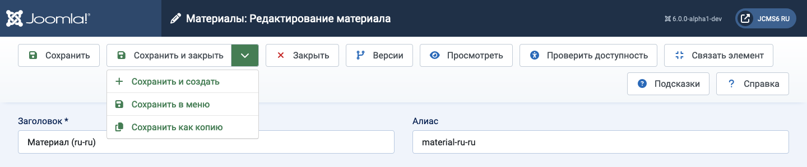

Цель¶
Панели инструментов присутствуют почти на всех страницах администратора Joomla! Исключением являются панели мониторинга. Они расположены в верхней части страницы сразу под строкой заголовка, содержащей название страницы и различные модули состояния, такие как версия Joomla и ссылка на главную страницу.
Каждая страница имеет набор кнопок, подходящих для её цели. Некоторые из них общие, такие как Сохранить, Отмена и Справка. Другие редкие, такие как Восстановить и Удалить сироты. Некоторые всегда активны. Другие неактивны (серые), пока не будет выбран флажок элемента списка.
Если кнопок много, они будут перенесены на две строки. Некоторые примеры:
Панель редактирования статьи¶

Кнопки без вниз направленной стрелки выполняются сразу. Например, Сохранить сохранит страницу и вернётся с зелёным сообщением подтверждения или красным сообщением об ошибке. Обратите внимание, что в большинстве случаев кнопка Отмена закроет страницу редактирования без сохранения изменений.
Кнопки с иконкой вниз имеют две функции. Выберите иконку, и появится список, как показано на скриншоте выше. Это позволяет выбрать альтернативные действия. Выберите кнопку, и действие будет выполнено. Например, Сохранить и закрыть на скриншоте выше.
Некоторые кнопки появляются только в определённых обстоятельствах. Например, кнопка Проверка доступности появляется только если плагин Система - Плагин проверки доступности Joomla включен. А Ассоциации появляются только на многоязычных сайтах.
Пожалуйста, изучите, что делают различные кнопки!
Панель инструментов списка плагинов¶

В этом примере панели инструментов кнопки серые, чтобы обозначить, что они неактивны. Они становятся яркими и активными, когда отмечен флажок элемента списка для подготовки к активации, деактивации или регистрации. Несколько элементов списка могут быть выбраны для одновременного действия, что является основной целью этих кнопок панели инструментов. Индивидуальные элементы можно обработать с помощью иконок в каждой строке (не показаны).